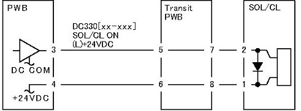

2.2.3.4 电磁阀/离合器 不 Energized 故障 FIP 
步骤

(图 1) 2004

在执行...之前 此 FIP, 确保 那里 is 编号 (机械) 操作 故障 使用 电磁阀 和 the 离合器.
输入 DC330 [XXX-XXX] 和 转动 开启.
Is the 电压 之间 the PWB 销-3 (+) 和 the GND (-) +24 VDC?
更换 PWB.

(图 1) 2004
在执行...之前 此 FIP, 确保 那里 is 编号 (机械) 操作 故障 使用 电磁阀 和 the 离合器.
输入 DC330 [XXX-XXX] 和 转动 开启.
更换 PWB.